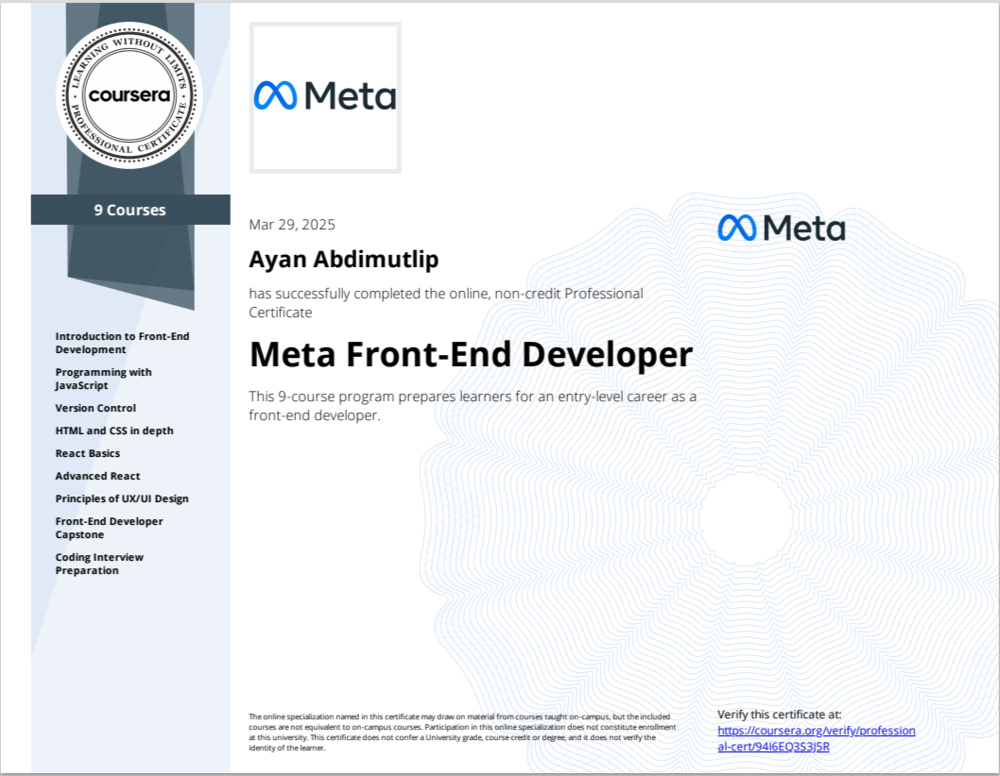

01 / FeaturedPortfolio
Ayan.dev
A hand-built developer portfolio with a console-inspired interface, motion, certificates and a clear way to start a conversation.
Open projectHello, I'm
I am a front-end developer who creates websites quickly and efficiently. Passionate about building interactive, AI-powered and user-friendly web applications.
I have expertise in various web technologies and design tools that help me build modern, polished web applications from concept to code.
A changelog of courses, certificates and milestones along the way.

A selection of things I have built — from AI systems and full-stack products to polished interfaces.
Showing 15 of 15 projects
A hand-built developer portfolio with a console-inspired interface, motion, certificates and a clear way to start a conversation.
Open projectAn AI-powered inDrive assistant for ride management, smart booking, route optimization and driver support.
Open projectA game health monitoring platform with AI insights, player analytics and performance optimization.
Open projectA local, offline-first Windows assistant with voice control, file handling and automation through local AI models.
A full-stack web application for creating and managing events end-to-end.
Useful Telegram bots, including a Kazakh-language ticket-summary bot with numbered inline actions.
Custom animated landing pages built from scratch — no page-builder templates.
A digital studio landing page with a lightweight project planner and a downloadable brief.
Open projectA route builder for slow travel in Kazakhstan, with region filters and a live itinerary.
Open projectA small-batch shop with product filters, a saved cart and a clear demo checkout.
Open projectA calm focus timer and daily task list that keep progress in the browser.
Open projectA browser study planner; companion bot source supports goals, check-ins and reminders.
Open projectA local expense tracker with categories and CSV export; companion Telegram bot source is included.
Open projectPreview issue labels in a local demo; a dry-run-first GitHub Actions workflow is included.
Open projectA live Hacker News digest with saved stories; optional AI and Telegram automation source is included.
Open projectA Telegram helper with quick links to portfolio demos, project source and contact options.
Open projectNothing matches these filters. Try a different search.
Feel free to reach out to me for any questions or opportunities.
Almaty, Kazakhstan
ayanabdimutalip@gmail.com